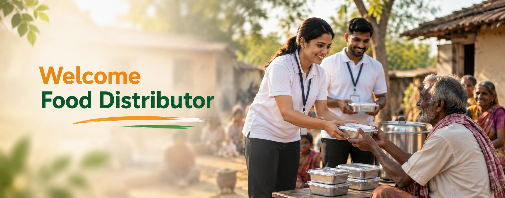

"Every meal you share delivers hope, comforts a heart, and proves that humanity thrives in our community."
Who are Food Distributors?
Food Distributors are organizations that help deliver food to people in need. They can include NGOs, social helping organizations, and community groups. They collect suitable food and help distribute it to people in their communities.
Why Do Food Distributors Need Food Providers?
Food Distributors such as NGOs and social helping organizations support people in need. They need access to safe surplus food that can be collected and distributed. Food Providers can make suitable surplus food available through Sevam. This helps food reach people who need it instead of being wasted.
What Is the Role of Food Distributors?
Food Distributors help reduce food waste while supporting people in their communities. They can find suitable surplus food available from Food Providers through Sevam. They can request or obtain food according to their needs and capacity. They can then distribute the suitable food to people who need it.
How Does Sevam Help Food Distributors?
Sevam connects Food Distributors with Food Providers who have safe surplus food available. Distributors can view food listings and check the type, quantity, and reasonable price. They can request suitable food according to their distribution needs and capacity. This helps them obtain food and distribute it to people who need it.